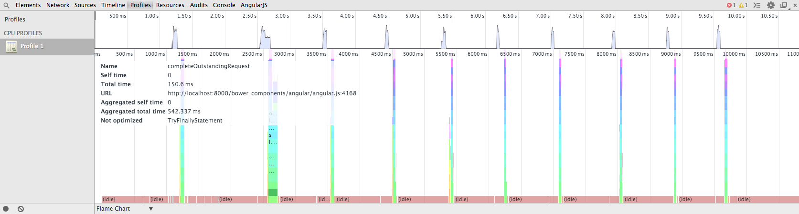
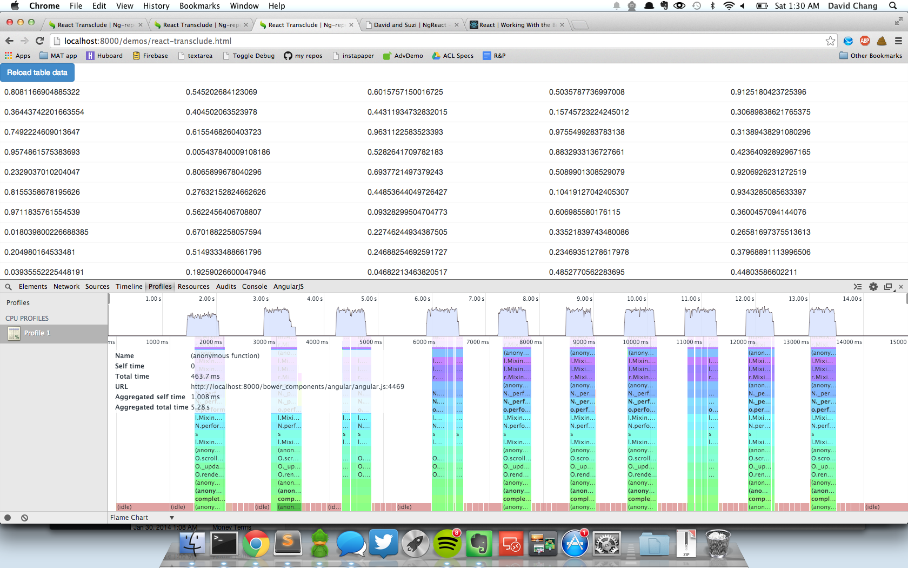
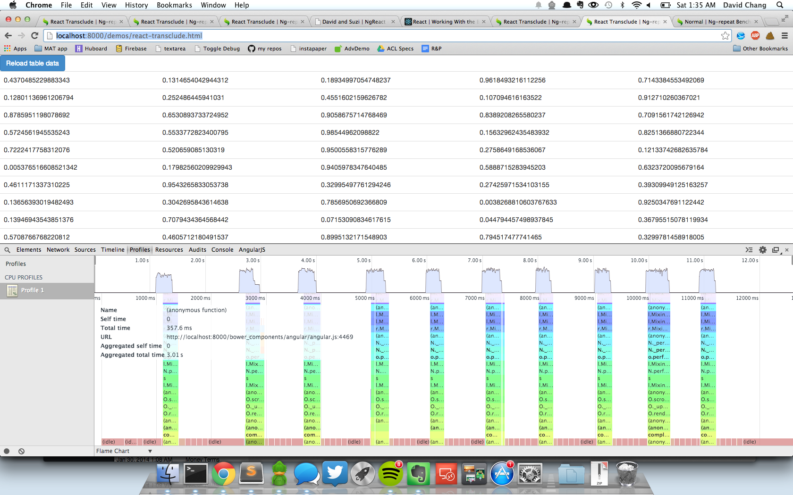
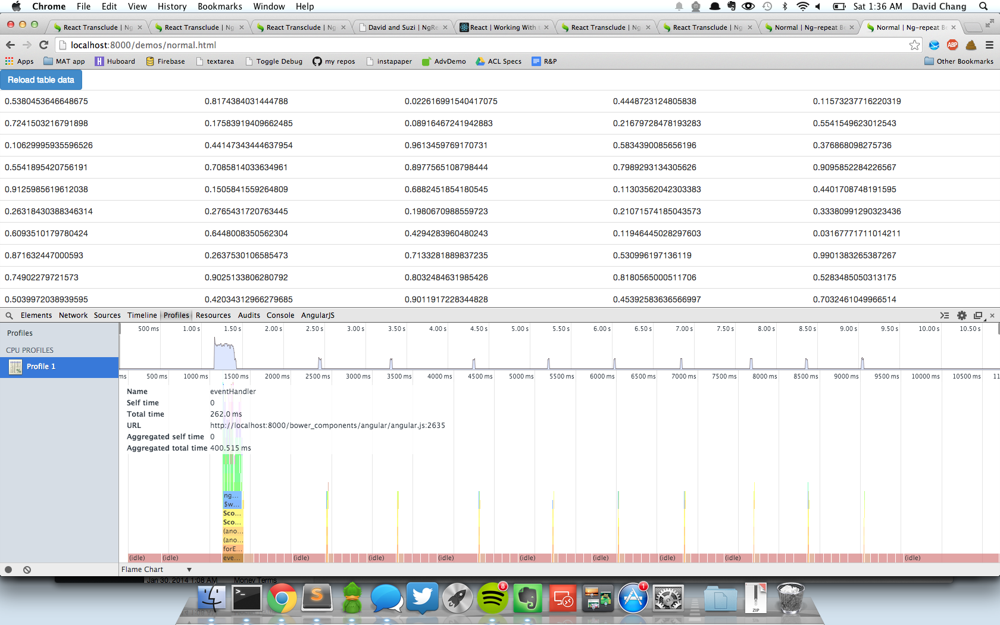

React 0.9 just launched this past week and Pete Hunt opened a Github issue (https://github.com/davidchang/ngReact/issues/2#issuecomment-35528362) against me to re-run my benchmark as they suspected I would find a big boost in performance. And I did - I saw a 33% increase just by updating my bower.json, dropping from 803ms to 542ms.
Which kinda got me back into the project. I had written an ngReactComponent directive where you could write the React Component and the directive would render the component from a watcher in the directive. At the time, this was like 67% faster than a naive ng-repeat. With the release of 0.9, this was now 78% faster.
And then I wrote a directive called ngReactRepeat that used transclusion to parse through the DOM and dynamically create React Components. But that was like 450% slower than the naive ng-repeat. This blog post will be about some optimization steps I tried.
Try 1: shouldComponentUpdateAbout this time, I started reading stuff about React and what made it so fast. One of the boasting points was that in the render step, React used a Virtual DOM to calculate diffs, and these diffs were used to minimize DOM interaction/manipulation. But before render gets called, there's a component step that you can override called shouldComponentUpdate that determines if render should be called at all, based on if there's any change in component state/properties.
Since I was passing around some pretty big objects, I thought maybe performance could be improved if I specifically told shouldComponentUpdate that it only needed to look at my array of 5 floats. No improvement. React does a good job out of the box.
Try 2: Stop calling React.DOM using applyMost of the examples look like:
React.DOM.div(null, "Hello ", this.props.name);
Since I was recursively/dynamically generating the children, I was doing stuff like this anytime I was creating a React Component:
return React.DOM[domEl.localName].apply(
null,
[attrs].concat(
vals,
childrenNodes
)
);
But @vjeux said I could get away with just providing a variable number of arrays as parameters, so I could do something like this:
return React.DOM[domEl.localName]( attrs, vals, childrenNodes );
I thought this might be faster, but it actually wasn't at all. In fact, after getting the optimization in Try 4, I went back and tried it again. And performance went from 3 seconds with apply down to 4 without apply.
Try 3: Don't pass scope as a property to the React componentOne thing I didn't realize about Angular was that you can retrieve the controller scopes through DOM elements. You just have to do something like $($0).scope() and you're looking at the scope used to render the view.
I had been passing around the Angular scope through like 3 layers of React components for my array of 500 5-element arrays. So that scope was holding all of that data, as well as a bunch of internal Angular stuff. There was a hunch that passing around the scope was making everything slow - and since I could just pull it off of a DOM element, I could just pass around a DOM ID or something.
So I stopped passing the scope around and instead just started using something like $scopeEl.scope() to pull it off when I needed it. And… no improvement. Apparently passing around the large scope object is pretty negligible. Good to know, but that doesn't help our performance. Again, React does a good job out of the box.
Try 4: Use scope.$eval > evalAnother thing I realized about Angular is that it evaluates a bunch of expressions, but it's not using eval - they're using their own service, which they expose to you in $scope.$eval.
So I could stop using eval and just do $scope.$evals instead. This was used in two different places - for each render, I was doing 2500 evals to evaluate ng-bind values and 500 evals to create the ng-click function properly.
I did the ng-bind first, which looked like this:
var defineValue = _.ngReactFormat(
'var {0} = {1}; var value = {2};',
[
scope.alias,
JSON.stringify(data),
_.ngReactBracketNotation(attrs['ng-bind'])
]
);
eval(defineValue);
return value;
and turned it into this single line:
return scope.$eval(attrs['ng-bind'], { scope.alias : data });

All of a sudden… 12.5 seconds down to 5.28. 57% faster.
Then I tried replacing the ng-click evaluation. It had looked like this:
var defineHandler = _.ngReactFormat(
'var {0} = {1}, handler = scope.$apply.bind(scope, scope.{2}.bind(null, {3}));',
[
scope.alias,
JSON.stringify(data),
fnName,
fnParams
]
);
eval(defineHandler);
attrs.onClick = handler;
and ending up like this:
attrs.onClick = function() {
scope.$apply(function() {
scope[fnName](scope.$eval(fnParams, { scope.alias : data }));
});
};

5.28 down to 3.01... that's another 43% improvement. And if you remember the original Angular ng-repeat performance, that came out as 2.45 seconds. So we're almost at native Angular performance in a case where we're actually transcluding and dynamically parsing out all of the elements into React components.
High five! 13.4 seconds down to 3.01 is something worth celebrating, even if it was mostly my folly in the first place.
But this isn't entirely too fair to Angular. Another thing I learned was that ng-repeat performance seems to struggle so much because it does a lot of work destroying elements… which you'll notice is the very thing that React excels at doing. React is very good at calculating DOM diffs and minimizing DOM manipulation.
But "track by" exists, so you can do stuff like ng-repeat="row in data track by $index" and Angular will be able to get significantly smarter about the way they do DOM manipulation. Adding track by to that normal, native ng-repeat results in a pretty stunning improvement (as of Angular 1.2.14):
That's 400 milliseconds. Compared to 2.45 seconds without "track by". So… umm.. 84% faster. So if you're wondering if you should use track by, the answer is Yes.
In closing, I think it is worth pointing out that the problems with ngReactRepeat were not related to a weakness in React. In fact, 2 of my attempts to improve performance (through shouldComponentUpdate and limiting the properties I was passing into the React component) showed no improvement. In the end, it was just my own mistake in using expensive evals.
Angular gives you a ton of functionality out of the box - a full MV* framework - and I am a big fan, but I'll admit that you need to know how to twist the right knobs to get performance.
That said, React gives you a very strong view component out of the box with the performance baked right in. Try as I did, I couldn't actually get it any faster. So pretty impressive stuff.